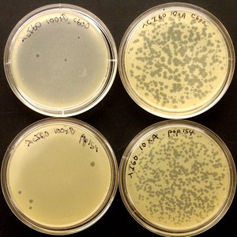
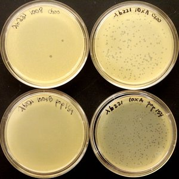
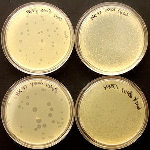
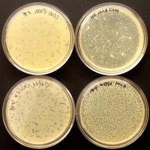
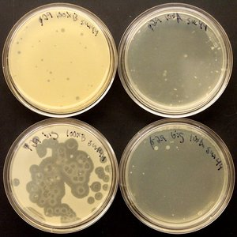
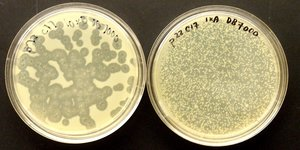

This small bacteriophage phage zoo was prepared by Paul Grayson and Fay Shaw 2005-10-8, as follows:
Each plaque on a plaque indicates a place where a single phage landed. Count the phages, work out the concetrations of phage in the original samples, and think about why some of the plaques are cloudy and there are small colonies of bacteria growing on plates that are completely covered by plaques.
Phage λ is probably the best studied of all of the bacteriophages. Here I am comparing two mutants: λcI60, a clear-plaque mutant and λcI26b221, a clear-plaque mutant that also has a genome of greatly reduced size. I am comparing its ability to grow on E. coli C600, a common strain used for propagating λ to that on E. coli pop154, a strain that has its λ receptor protein replaced by a version from shigella. I obtained λ and C600 from Mike Feiss, and the pop154 was from Alex Evilevitch.
 HK97 is almost identical to λ. We compare its growth on C600 to that on the host, Ymel, that Bob Duda sent me along with the phages. Note that there are cloudy regions in the centers of the plaques - these probably indicate the growth of lysogens. I'm not sure what happened to the 10xA plate.
N4 is a phage I obtained from Lucia Rothman-Denes with a very DNA importation strategy. Again, I compare its growth on the included host with that on C600. Note that N4 plaques are quite small and fuzzy. Also, there are resistant colonies that develop at very high phage concentrations - are these lysogens?
This phage was sent to me by Dwight Anderson and Shelley Grimes. Structurally, it is the best-understood tailed dsDNA bacteriophage, and I am showing its growth on its host B. subtilis su+44. I also show here a suspected mutant phage that makes really big plaques. Note that both produce resistant strains at high enough concentrations and that the mutant plauqes show ring-shaped turbidity.
P22 is a small dsDNA phage that was sent to me by Peter Prvilege. I am interested in using it for in vivo ejection studies. I'm just testing it against its host, a strain of S. typhimurium. This one displays turbid plaques and reistant colonies.
{kind=link}
{kind=link}
{kind=link}
{kind=link}
{kind=link}
{kind=link}